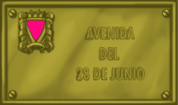

Espacios pa la
diversidá
28 de xunu de 1969:
La revuelta de Stonewall (Nueva York)
Ñaz l'arguyu GLBT
Un fechu perimportante tuvo llugar el 28 de xunu de 1969, un fecho que marca un enante y un dempués pal coleutivu GLBT. Esi día, la policía, siguiendo una tradición de control y hostigamientu escontra tresexuales, llesbianes y gais -y eso que taben prohibíes les redaes- entró nel pub Stonewall, ún de los frecuentaos pol públicu GLBT, cola escusa d'una falta de permisu de los dueños pa vender alcohol. N'aquella época la xente nun tenía una conciencia d'oposición y resistencia a estos abusos y, ensin embargu, aquel día la xente rebelose. El resultao fueron dellos detenios qu'acabaron en comisaría, mentanto otra xente protestaba delantre'l llocal. Al día siguiente hubo disturbios en tola rodiada en protesta por estos fechos. Durante los cuatru díes siguientes, les barricaes fueron continues y en selmanes sucesives les aiciones continuaron, dificultando notablemente a la policía'l control de la zona. La necesidá d'organizar y preparar estes protestes llevó a la creación del Gay Liberation Front (GLF). Nacía asina'l movimientu GLBT modernu.
De la mesma que los afronorteamericanos taben radicalizándose y dellos sectores abandonaben la llucha pacífica contra la discriminación, apaecieron grupos más radicales como Les Panteres Negres, tresexuales, llesbianes y gais pasaron tamién a la ofensiva. De sópitu, ser gai dexó de ser un motivu de vergüenza interior para convertise nun elementu d'arguyu y l'homosexualidá empezó a reivindicase abiertamente. La conseña yera "salir", dase a conocer públicamente como gai. Empieza asina'l períodu del "arguyu gai" o "gai power". En realidá taba copiándose la fórmula del "black power" que'l movimientu negru polos derechos civiles desenvolvía naquel momentu nos Estaos Xuníos.
 Dende aquella data -que pasó a convertise n'una cita reivindicativa mundial- el movimientu tresgaillésbicu -GLBT- empezó a percorrer un camín nuevu. Nel ámbitu occidental, adulces, fuéronse ganando importantes batalles a la homofobia llegal, médica y social. Asina, la homosexualidá foi pasu ente pasu despenalizándose en tolos países, la desmedicalización, que s'empecipió nos EEXX a partir de 1973, foise imponiendo nel estamentu médicu, hasta que la OMS retiró la homosexualidá del so catálogu d'enfermedaes mentales a principios de los años noventa. Col nuevu mileniu, les pareyes de gais y de llesbianes son reconocíes legalmente na mayor parte de los países, inclusive como matrimonios (Holanda, Bélxica, España...).
Dende aquella data -que pasó a convertise n'una cita reivindicativa mundial- el movimientu tresgaillésbicu -GLBT- empezó a percorrer un camín nuevu. Nel ámbitu occidental, adulces, fuéronse ganando importantes batalles a la homofobia llegal, médica y social. Asina, la homosexualidá foi pasu ente pasu despenalizándose en tolos países, la desmedicalización, que s'empecipió nos EEXX a partir de 1973, foise imponiendo nel estamentu médicu, hasta que la OMS retiró la homosexualidá del so catálogu d'enfermedaes mentales a principios de los años noventa. Col nuevu mileniu, les pareyes de gais y de llesbianes son reconocíes legalmente na mayor parte de los países, inclusive como matrimonios (Holanda, Bélxica, España...).
El 28 de xunu ye una fecha histórica que marca un finxu na llucha pola dignidá de millones de llesbianes, gais, bisexuales y tresexuales y Stonewall ye'l nome que va íntimamente amestáu a esa llucha. Son dos nomes pa l'homenaxe, dos nomes que queremos caltener vivos na nuesa sociedá y qu'esperamos ver tamién nos sos espacios públicos.